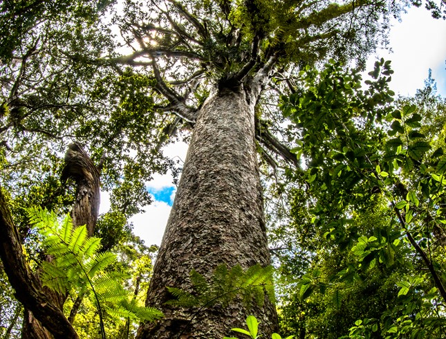

The Kauri tree
Agathis, commonly known as
kauri or dammara, is a
genus of 22 species of
evergreen tree. The genus is
part of the ancient conifer
family Araucariaceae, a
group once widespread
during the Jurassic and
Cretaceous periods, but now
largely restricted to the
Southern Hemisphere
except for a number of
extant Malesian Agathis.
More info DOC
05/07/19